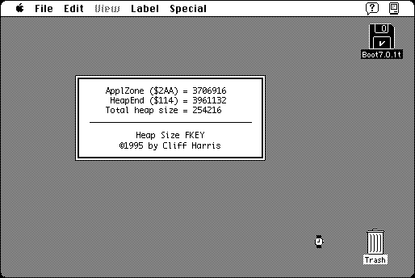

Download
HeapSizeFKEY.zip (4K) Heap Size FKEY 1.1 repackaged into a zipped hfs disk image and checksum file. The disk image can be mounted with Mini vMac.
HeapSizeFKEY.sit.hqx (4K) Heap Size FKEY 1.1 in the original format.
copyright: Cliff Harris
mod date: Jan 3, 1999
license: Freeware
from url :
Freeware Written by Cliff Harris
“FKEY that displays the amount of heap space taken by the current application. Useful for determining memory requirements for applications.” May require System 7 - when run from the System 6.0.8 Finder, the next application launched will crash.

If you find these downloads useful, please consider helping the Gryphel Project, which hosts them.
Here are the md5 checksums for the downloads, signed with Gryphel Key 5:
--------- GRY SIGNED TEXT --------- 0e6a2af17890372705a7c6b229f8eb41 HeapSizeFKEY.zip 72e34946366efeb3728f26a3240b08ee HeapSizeFKEY.sit.hqx ------- BEGIN GRY SIGNATURE ------- Gry/4Xa8CFcUzxdN/FWKiUQqrFE2bcTPjyopJdb4uhLSoyQbNzHzWr1jzC5aOGIK khSq/g+1B7+v/oUdtIvga8C33BBhrX2jJhr6Y87RYudzQbozu+jy701+sqFREdlX Io50i0hVPqrf0Kl8VAeJcD7bPkSWRqg93qtjgZEuxprAfumvdrXyK1YhoaGim0bl -------- END GRY SIGNATURE --------